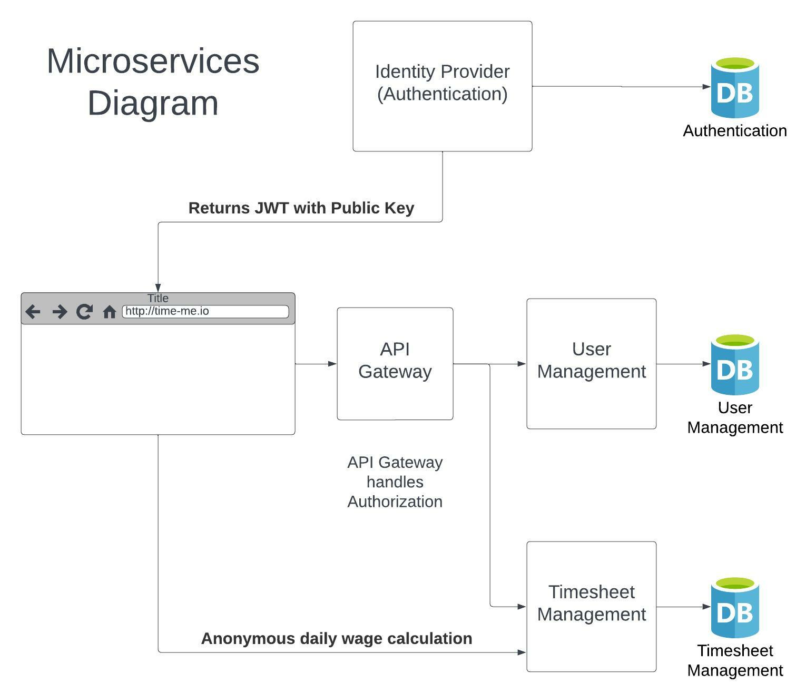

Aims
TiMe will allow employees and freelance workers to track their hours and calculate their pay. Many employees do not have access to their hours worked and usually waiting until pay hits the bank to see how much they earnt. Further, for freelance workers, there are few available which are structured to meet the needs of all types of freelance workers. TiMe will allow individuals to log their hours by timer or entering manual hours. TiMe will offer an option to enter pay rate or project rate, which will calculate with hours worked and display in real-time the progressive hours and pay over chosen cycle (ie. Weekly, fortnightly, monthly or by contract).
Project TiMe will be produced working in Small Batches, a process concept derived from Lean Manufacturing (Rofrano, 2022). Each feature completed on its own in what is referred to as a sprint, generally small enough task to have completed in less than a week. This process referred to as single piece flow, results in a much faster feedback loop (Rofrano, 2022). The components incorporated will be at least Minimum Viable Products (MVPs) and include User system items such as account creation, and user data; an Authentication/ Authorization system; Timesheet management; Shift data; Web-based UI; other items intended to be incorporated into further production include Calendar Integration; Desktop applications; and Mobile applications.
Goals
User System
User system contains two crucial components, referred to as microservices in this document; Users will first open an account creation page which then provides access to the application. In addition, the user system will have access to a database where user data is held, such as login details. Breaking this component into 2 separate microservices allows rapid development, using test Driven Development (TDD) to ensure development is faster and more accurate. Each microservice, will be tested during production to ensure rapid delivery of each component. Further with automated testing using this process will create a Continuous Integration and Continuous Delivery (CI/CD) providing a service with minimal disruption. Data collected in this component will be stored within a database provided by the cloud service provider which our service is developed on.
The User account creation page will be the first microservice of the User System and allows a user to enter an email address, create a username and create a password. The production processes will consist of using HTML/CSS and JavaScript to deliver the user Interface (UI) and C# will be used to develop the back-end. Further, Entity framework ORM will be used for handling Database communications.
The User Management system involves the creation, deletion, and management of user accounts. Upon creation of a user account, they will be assigned a unique identifier not only provided by them in the form of a username or email, but also by the system in the form of a Globally Unique Identifier (GUID). This GUID will be used to link users to their data stored in other microservices that belong to the overall TiMe system architecture. The user management system will mainly store personal information such as their name, email address, and other important information relating to themselves regarding their accounts. At this stage not all user details have been finalised and will continue to be added during development and possibly into deployment and maintenance.
Authentication / Authorization System
The following task would be creating an Authentication / Authorization system. Having an authentication system is crucial to ensure users to have security for their private information held in the account. This process consists of two separate components: The Authentication System, using Json Web Tokens (JWT’s). This process involves storing user login information, or unique identifiers i.e., a username and/or email address, and a password. Initially when a user creates an account, they will provide a unique identifier and password. The password is then hashed by the system and stored into a database along with the unique identifiers. Activated when a user logs into the system, the user inputs their unique identifier and password, the system hashes the password and compares it to the stored hash in the database to confirm the user is who they say they are and proceeds to generate a JWT which is then used with every http request to access restricted pages and features. This service would run as a microservice with access to a NoSQL database that houses solely a user's unique identifier and hashed password for both performance and security reasons. Automated testing of this microservice again will provide CI/CD for a non-interrupted service.
Authorization using microservices can be tricky, however, possible with JWT’s or a third-party Identity Service. There are several different implementation paths when using JWT’s to implement authorization within microservices which will require further deliberation and research. Currently the most viable option would be to have the API Gateway verify the validity of the JWT and then direct the request through to the microservice and pass the JWT along.
Timesheet Management System
The Next step in development phase is the Timesheet Management System; this is the feature section, where users can enter and manage data relating to shifts or projects. Timesheet Management System will have two microservices belonging to it to allow CI/CD throughout Data Collection, Storage, and Retrieval.
The first will be Data Collection; Users will have ability to enter start & finish times manually allowing user to enter rostered shifts in advance; or using a start/stop timer which is used to start and stop current working times, the system then records the hours which have been recorded by the timer. Users can enter a rate of pay, which then calculates data from each shift entry to give daily, weekly, monthly wage total.
The Time Management system’s second microservice will be Data Storage. All input from the Data Collection is stored within the Data Storage microservice’s allocated database on cloud service platform; this allows users to access all previously input data from any device they login to their account on, as well as entering new data into Data Collection.
The development processes of this dual microservice component consists of shift management, wage calculations, and scheduling. The Shift management service will handle all data regarding the creation, updating and deletion of shifts which will house business rules such as a user cannot have overlapping shifts. The wage calculation system will focus solely on using data that relates to shifts and return earnings based on the data provided, this data will likely be stored into a NoSQL database for performance and scalability reasons. Finally, the scheduling system will pull data from the shift management system to provide notifications users about upcoming shifts, this can be tied to a background queuing system that sends out notifications in the form of SMS messaging, emails, or calendar reminders to be implemented in later plans. These microservices make up the time management system and will be implemented through C# and entity framework core, with the ability to communicate and share information between themselves.
The authentication, authorisation, user management, and timesheet management systems will communicate through an API Gateway. Each system will maintain its own API that the API Gateway can connect users and other microservices to pull information for their own needs. All API calls will require JWT’s in their communication to confirm whom they are communicating with for security reasons which should be handled by the API Gateway.
User Interface (UI)
The next stage will be the design and building of User Interface (UI) for each platform. TiMe is intended to be available as a web browser application, which will be in its initial launch phase; Later we expect to further make TiMe available as both a desktop app and mobile app. Each application its own microservice. As previously stated, it is intended that the web browser application will be the first UI implemented. A web-based application can be accessed on a browser from any device and therefore makes it a universally accessible application. The web-based UI will be developed using HTML, CSS & JavaScript, providing a seamless user experience. Future development will incorporate APIs of a downloadable desktop application and a mobile application available on android and Apple devices. Each interface will become its own microservice, developed individually using TDD, further allowing CI/CD for a smooth uninterrupted user experience. Each UI will pull from each microservices public facing API to obtain data to be processed and displayed to users to create, view, and update personal data.
Calendar Integration
Another potential future implementation into TiMe is Calendar Integration. An ability to sign in and integrate your work shift schedule into already existing calendars. Likely calendars to be integrated would be major calendar services such as Google calendar; Outlook Calendar; Samsung Calendar; Apple Calendar. This feature will likely not be introduced within 16 weeks, therefore not a lot of information has been researched in relation to what is involved in the process of enabling access to these services through our application.
Microservices_diagram